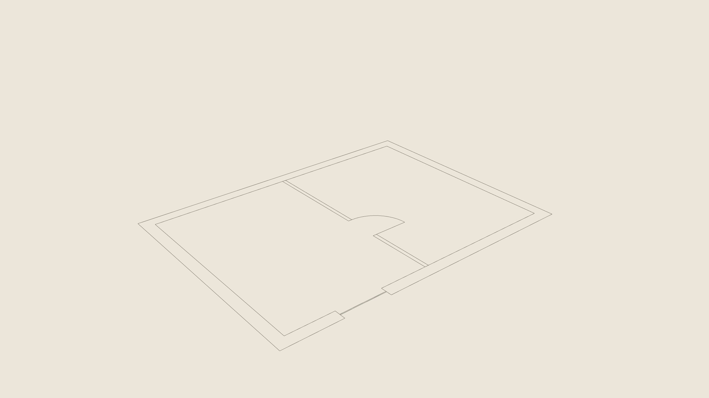
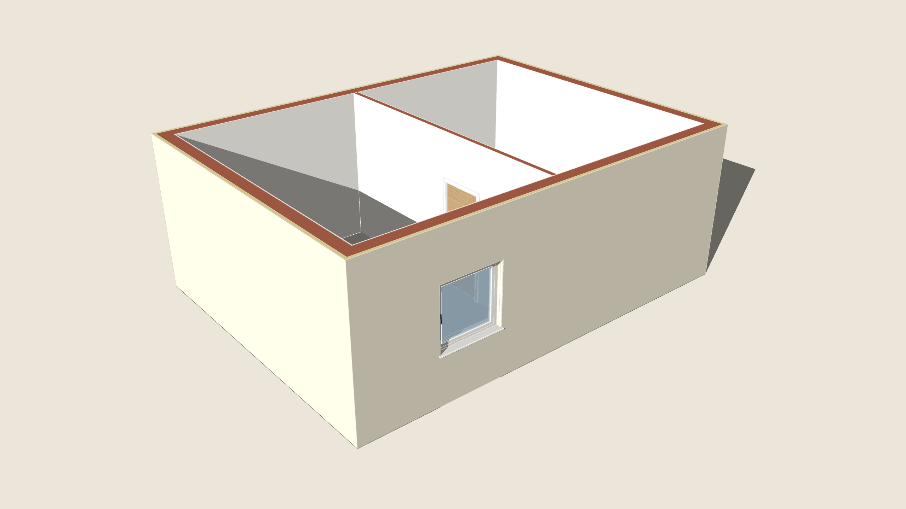

Select a plan's lines — drawn in SketchUp or brought in with Import DXF — and run Plan to 3D. Each wall is read from its pair of parallel lines and built as a Smart Wall of the thickness measured (thick ones exterior, thin ones interior or drywall), the walls joined where they meet; each gap in a wall with a door's swing is built as a door hinged where the arc starts, a gap with glazing lines as a window, a bare gap by its width. Dimension, text and hatch layers are left out. One box asks the storey's height and the openings' heights in cm; one Undo takes it all back; the plan's lines stay as they were.


BeforeAfter